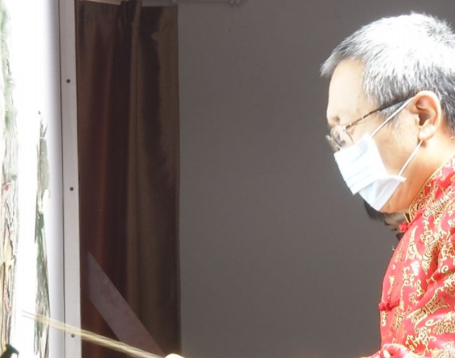

疫情面前，每个人都以自己的方式在战斗、在加油。我市非遗传承人也发挥专长，用文艺作品为战“疫”助力。
冠状病毒来势猛，武汉疫染国人惊。中央决策发号令，白衣天使勇逆行。
这是我市国家级非遗传承人侯建川牵头创作的皮影戏《众志成城抗疫情》。为战胜疫情积极贡献力量，他们以作品表达心声。
非遗传承人侯建川:组织了一天时间，整个连录音拍摄，一步到位。
面对严峻疫情，每个人都是战士。对于孝义皮影戏艺人来说，他们的武器就是手中的皮影，虽不能“战”在一线，但是仍坚守文艺战场，担当起文艺工作者的使命和责任。
非遗传承人侯建川:看到我们党中央号召之后，解放军也上去了，第一批白衣天使，全国各地都支援武汉。中国人有钱出钱有力出力，作为我们传承人，只能用我们自己的武器，也就是我们的艺术，来宣传这一次抗疫出现的英雄，用皮影形式来展示。
疫情期间不外出、不聚集，侯建川通过网络连线、远程协调制作、音效合成等方式，完成了皮影戏创作，并同其他非遗传承人共同演绎，将录制好的作品通过网络推送。
市民王康丁:从微信看到侯老为疫情创作的皮影戏，这种皮影戏宣传形式独特，让我们坚定了战疫必胜的信心，也向坚守在战疫一线的英雄鼓劲。
手虽不能紧握，心却紧紧相连。在全国战“疫”的当下，用非遗精品提振精神、团结力量，是非遗“见人见物见生活”的应有之义，也是非遗传承人的使命担当。侯建川说，疫情终将过去，静候春暖花开，要继续坚守在自己的战场，为抗疫加油。
非遗传承人侯建川:下一步，想把具体的英雄事迹给他们编成皮影戏，让我们下一代知道，这个病是怎么来的，不畏险阻的人怎么样用自己的身体挡住病（毒），保护我们。
非遗传承人赵永琪:为中国、武汉加油。